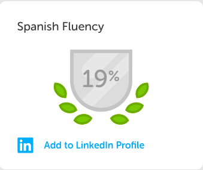
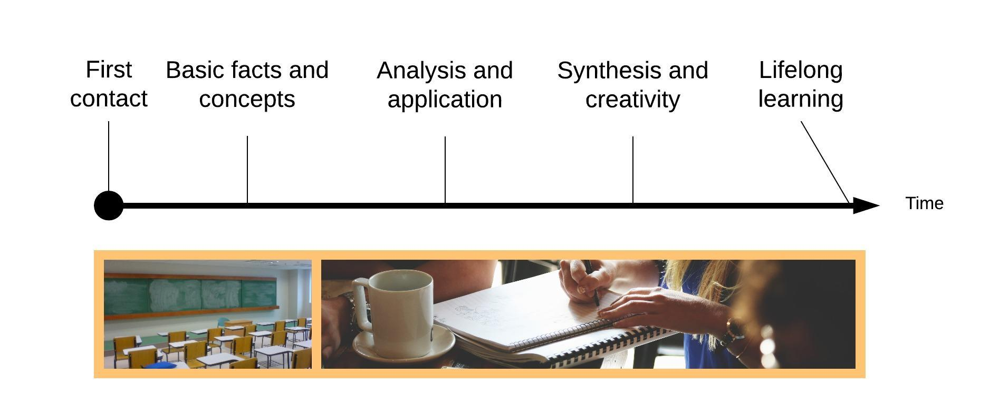
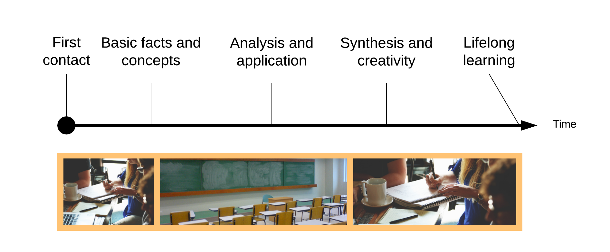
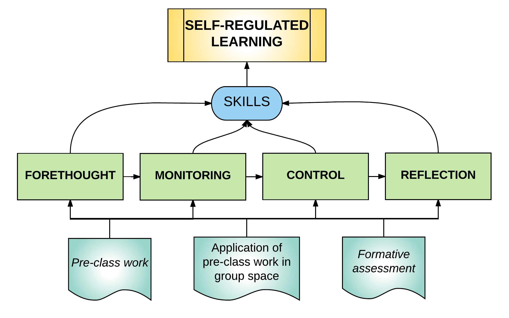
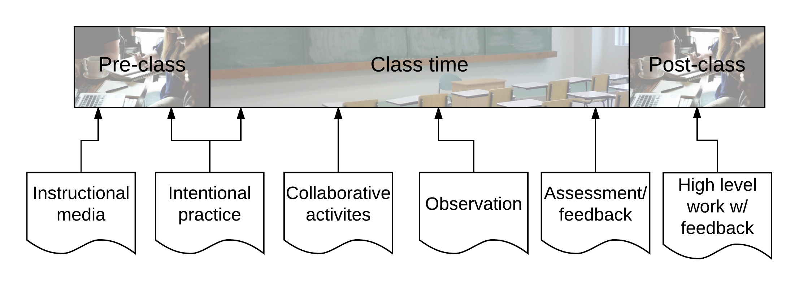

A mathematician "learns" Spanish
 |
Guiding Questions
What skills and attitudes are needed to truly learn a language?
Can those be taught? If so, when and how?
What is lifelong learning?
Instructions
For each question:- Think about the question for one minute
- Pair with a neighbor when prompted
- Share with the entire group
What skills and attitudes does a person need in order to learn a language?
When and how should those skills be taught?
End goal: Self-regulating students
When and how?
Flipped learning
Space/Time

The traditional model
Flipped learning is
- A pedagogical approach in which
- First contact with new concepts moves from the group learning space to the individual learning space in the form of structured activity, and
- The resulting group space is transformed into a dynamic, interactive learning environment, where
- The educator guides students, as they
- Apply concepts and engage creatively in the subject matter.
The Flipped Learning model
Flipped learning: A gateway to self-regulated lifelong learning

Applications
Structuring a flipped (language) lesson
Helaine Marshall, https://goo.gl/MwxjP5
Example from mathematics (Discrete Structures)
Topic: Additive and multiplicative principles of counting
Traditional: Group space used for lecture and examples on these principles; maybe some minor group work
Then, students sent home with homework on more advanced problems
Flipped Learning approach:
- Determine the learning goals for the unit
- Determine which learning goals are the hardest and focus class time on those
- Design group space activities to address the hardest goals
- Design individual space activities to address simplest goals, set students up for the group space
- Observe, assess, collect data and adjust
Goals for the unit:
- State the additive principle and use it to solve a basic counting problem.
- State the multiplicative principle and use it to solve a basic counting problem.
- Given two sets that have no element in common, count the number of items in their union given the number of items in each set.
- Given two sets, count the number of items in their Cartesian product given the number of items in each set.
- Explain the differences between the additive and multiplicative principles and the situations where you would use one but not the other.
- Solve a counting problem by selecting either the additive or multiplicative principles and applying them to the problem.
Activity for group space
Activity for individual space, pre-class
Observe, assess, collect data and adjust
Adjustments based on pre-class activity results
Checking in with collaborative groups and giving feedback as they worked
Presenting work at the board and discuss (feedback from instructor and classmates)
Opportunities to reflect
Where is the lifelong/self-regulated learning in all of this?
Your turn
How could you use this model to design a flipped lesson for a course of your own?
What are the goals of this lesson?
Which of those goals should students address in the group space? Which should be left for the individual space for students to learn on their own?
With a partner: What activities could students do in the group space?
With a partner: What activities should students do in their individual space to prepare?
How will you know if students are learning?
Where is the lifelong/self-regulated learning in all of this?
Example: Flipped Intensive EFL in the US
Intensive English immersion for non-native speakers (intermediate)
Project based approach: Create a newscast
Individual space: Choose topic, gather subject material, practice, upload to YouTube
Group space: Watch each other’s videos and critique
Bauer-Ramazani, C., Graney, J. M., Marshall, H. W., and Sabieh, C. (2016). Flipped Learning in TESOL: Definitions, Approaches, and Implementation. TESOL Journal, 7(2), 429–437.
Where is the lifelong learning?
Example: Flipped Idiomatic English in Taiwan
Intermediate/advanced course on idiomatic English
Two sections of 24 students each, alternate between traditional and flipped
Main goal:Demonstrate authentic use of English idioms
Group space: Interactive discussion demonstrating use of idioms
Individual space: Read from book and then create a short story using idioms, use LINE to share drafts and get feedback
Findings
Significantly higher scores on oral idiomatic proficiency
Increased motivation among students to learn idioms
Use of social media/technology also improved motivation
Some concerns about the time requirement for flipped learning
Chen Hsieh, J. S., Wu, W.-C. V., and Marek, M. W. (2016). Using the flipped classroom to enhance EFL learning. Computer Assisted Language Learning, 8221(December), 1–25.
Final thoughts
A mathematician learns Spanish (part 2)
Establecer metas
Elija sabiamente materiales
Monitorear y ajustar
Evaluar y cambiar
No aprendí estas habilidades en la clase de español. Los aprendí en la escuela de posgrado en matemáticas.
Flipped learning is an ideal framework for designing and teaching courses where students learn not only language but how to learn languages and how to learn anything.
We cannot teach students mathematics or languages
We can only teach them how to learn math or languages
Then put them in a supportive environment where they learn
Image credits
- Gateway: US National Park Service
- Strategy: https://www.flickr.com/photos/gabrielsaldana/
- Lifelong learning: https://www.flickr.com/photos/jay_erickson/
- Clock: https://www.flickr.com/photos/rueful/
- Conclusion: https://www.flickr.com/photos/davebloggs007/
- Flipping: https://www.flickr.com/photos/generated/